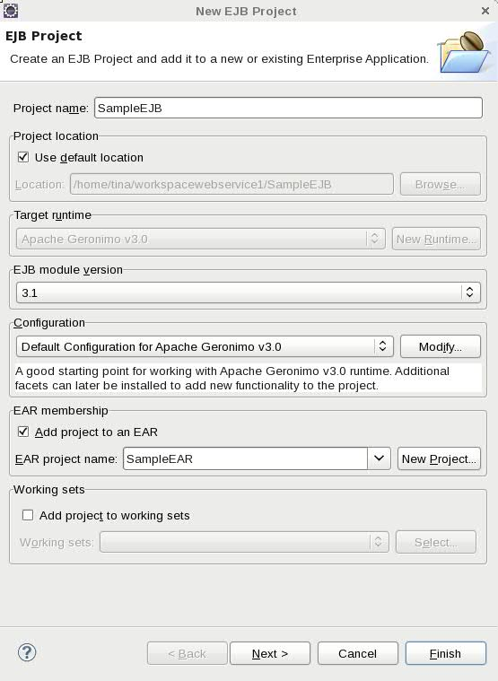
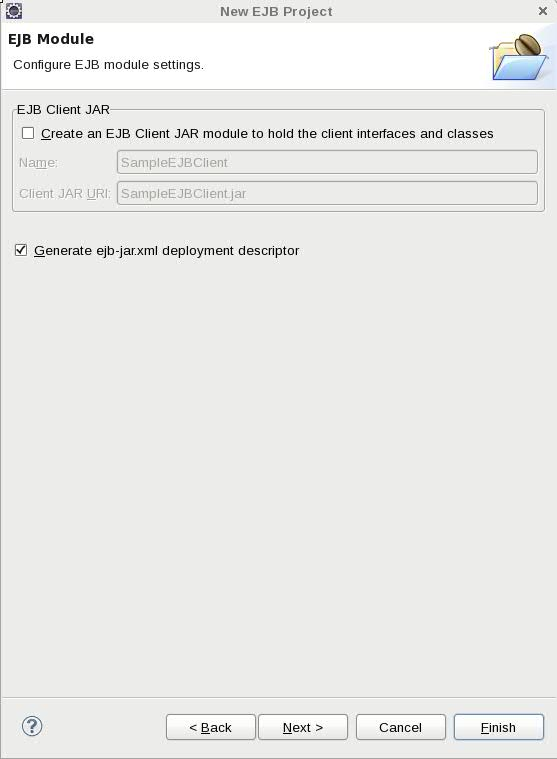
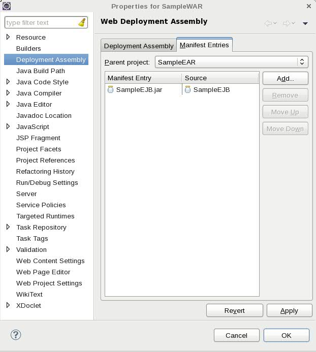
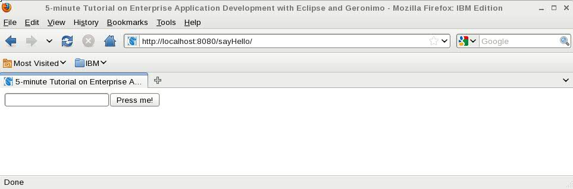

本教程将引导您使用Eclipse和Geronimo配置，开发和部署企业应用程序。要运行本教程，至少需要您安装以下必备软件。
要运行本教程，至少需要您安装以下必备软件。
- Sun JDK 6.0+
- 面向特定平台的Java EE开发人员的Eclipse IDE
- Apache Geronimo Eclipse插件3.0.x
- Apache Geronimo服务器3.0.x
开发环境部分中提供了有关安装Eclipse的详细信息。本教程分为以下几节：
创建企业应用程序项目
从Eclipse工作区创建企业应用程序项目开始。
- 选择“ 文件”->“新建” ，选择“ 项目...”，然后在弹出窗口中选择“ 企业应用程序项目” 。
- 在EAR Application Project向导中，输入SampleEAR作为项目名称，然后在Target Runtime中选择Apache Geronimo v3.0 。其余部分保持原样。

- 单击下一步 。
- 在“ 要添加到EAR的J2EE模块”窗口中，选中“ 生成部署描述符”复选框，然后单击“ 下一步” 。

- 在“ Geronimo部署计划”窗口中，输入以下指定的值。要了解有关这些值的含义的更多信息，请检查“ 创建部署计划”部分。
- 组ID： sampleear
- 工件ID： 样品耳
- 版本： 1.0
- 神器类型： 耳朵

- 点击完成 。
如果询问是否要更改为Java EE透视图，请单击是 。您可能需要选择“ 记住我的决定”复选框，以避免将来再处理该复选框。
您现在应该具有以下项目结构。

创建EJB项目
下一步是创建一个EJB项目来保存您的EJB。
- 选择File-> New ，选择EJB Project 。
- 在“ EJB项目”向导中，输入SampleEJB作为项目名称，然后选择“ 将项目添加到EAR”复选框。其余部分保持不变，然后单击“ 下一步” 。

- 取消选中“ 创建EJB客户端JAR模块以保存客户端接口和类”复选框。我们对此不感兴趣。单击下一步 。

- 使用以下值填写“ Geronimo部署计划”字段：
- 组ID： sampleear
- 工件ID： sample-ejb
- 神器类型： ejb

- 点击完成 。
您现在应该具有以下项目结构。

创建动态Web项目
现在您已经创建了EAR和EJB项目，下一步是创建一个动态Web项目来保存您的Web应用程序。
- 选择File-> New ，选择Dynamic Web Project 。
- 在“动态Web项目”向导中，输入SampleWAR作为项目名称，然后选择“ 将项目添加到EAR”复选框。其余部分保持不变，然后单击两次Next 。

- 使用以下值填写“ Geronimo部署计划”字段：
- 组ID： sampleear
- 神器ID： 样品大战
- 神器类型： 战争

- 点击完成 。
您现在应该具有以下项目结构。

创建无状态会话EJB
每个无状态会话EJB都有自己的业务接口。有三种类型的业务接口- @Remote ， @Local和@WebService -以及这三者的组合。EJB开发从定义业务接口并在bean实现类中实现开始。我们将在下一步中执行此操作。
创建远程业务界面
- 右键单击SampleEJB项目，然后选择New- > Interface，并用以下值填充它：
- 包装： 样品耳
- 名称： RemoteBusinessInterface

- 点击完成 。
现在，我们需要添加一种业务方法，并使用以下方法将该接口标记为远程接口@Remote注解。
创建bean类
- 右键单击SampleEJB项目，然后选择New- > Class并用以下值填充它：
- 包装： 样品耳
- 名称： MyStatelessSessionBean
- 接口： sampleear。远程业务接口
- 点击完成 。
实现业务方法sayHello，并使用@Stateless批注将该类标记为无状态会话Bean。
Web应用程序开发
是时候在Web应用程序中使用EJB了。在本节中，我们创建一个jsp index.jsp执行Servlet MyServlet的页面，而该Servlet又执行ejb MyStatelessSessionBean 。
创建欢迎页面index.jsp
- 右键单击SampleWAR项目，然后选择New- > JSP 。命名
index.jsp然后点击完成 。
- 对其进行更改，以使其在提交表单时执行servlet。
创建servlet-MyServlet
由于Servlet调用EJB，因此Servlet所在的Web项目取决于EJB项目。让我们定义依赖关系。
- 右键单击SampleWAR项目，然后选择“ 属性” 。转到Java Build Path并单击“项目”项，然后单击“添加”按钮以选择“ SampleEJB”项目，然后单击确定 。
- 或选择“ 属性” ，然后选择“ 部署程序集” 。选择清单条目选项卡，然后选择添加... ， 完成 ， 应用 ， 确定 。


- 右键单击SampleWAR项目，然后选择New- > Servlet，并用以下值填充它：
- Java套件： sampleear
- 类名： MyServlet
- 单击下一步 。
- 更改“ URL映射”部分，以便servlet在/ sayHello URL映射处提供服务，然后单击Finish 。

MyServlet.java创建后将自动打开以进行编辑，如下所示更新servlet，以在执行时调用ejb。
- 更新SampleWAR的WEB-INF目录下的web.xml
- 检查SampleWAR的WEB-INF目录下的geronimo-web.xml
部署并运行
在测试此示例之前，剩下的就是部署它了。当您选择直接从Eclipse工作区运行应用程序时，将自动为您完成此任务。
- 右键单击SampleEAR项目，然后选择Run As- > Run on Server 。当出现“在_Server上运行”弹出窗口时，选中“ 在运行此项目时始终使用此服务器”复选框。其余部分保持原样。

- 点击完成 。
- 服务器已停止，因此什么也没发生（至少从用户的角度来看）。打开“ 服务器”选项卡，然后在本地主机上的Apache Geronimo v3.0 Server上单击鼠标右键，然后选择“ 启动” 。
- 几秒钟后，Geronimo将启动并运行，并发布企业应用程序。打开您选择的浏览器，然后转到http：// localhost：8080 / sayHello / 。

- 输入您想要的任何名称，例如
John Doe然后按按我！ 按钮。